Welcome to the TAG training course for Java! This Git repo contains a skeleton project ready for you to clone. Over the next few days, we’ll build it up to be a fully fledged Java/Spring API. The aim of this course is to get you familiar with the basics of Java, working with Spring and sending and receiving data through web requests.
The underlying theme of the app is that it acts as an API for doctors to access and store malignant cancer diagnoses, called screenings. Under the hood in the skeleton project is an in-memory database of about 500 cancer diagnoses taken from a well known dataset. This is the same dataset you’ll be using in the AI hackathon at the end of your training. By the end of the course, you will be able to query this dataset and insert new records by using an API you built!
Sounds exciting!
This course is perfect for complete Java newbie’s. If you have previous experience in development, this will act as a great refresher. If not, we’ll get you up to speed on the basics of how a Java app works. Each day you’ll perform a number of tasks to build the application. Before you start a task, you should watch the related Pluralsight videos listed to give you a bit of background and help you complete the task. But don’t rely solely on the videos or the hints in this guide. There’s a wealth of information out there on the Internet, paticularly from sites such as Stack Overflow.
Link to PluralSight where you should have an account: https://app.pluralsight.com/library/
Some of the things we’ll cover over the next few days:
Lets get started…
Some of the tools we’ll be using today include:
Patient object who has a name, date of birth and gender, which make up the object.Watch the below videos before you attempt the first task:
With the videos watched, we can now move onto the fun part. What we’ll be doing today is setting up our development environment, cloning this repo to our local environment and start creating some basic Java classes.
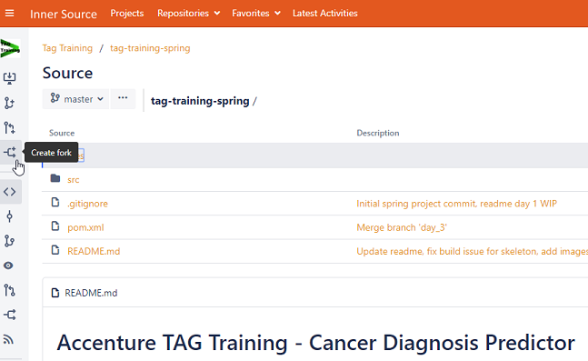
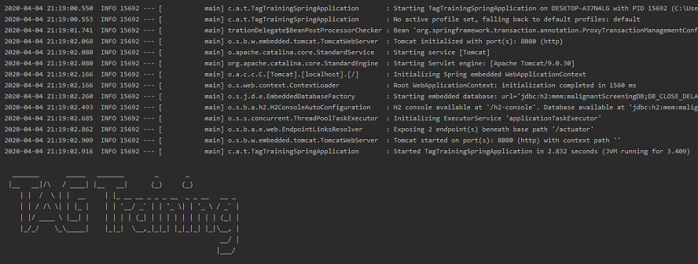
Hints
With the app up and running, we can now write some basic code. In our project, we want to represent patient’s and their cancer diagnoses. We can do this using classes. Each new patient will be an object which is an instance of our patient class. These classes will contain multiple fields to represent the information we need. Read the hints for more info on how to correctly name and populate these objects.
Patient. Put this object in the patient package. Give it the following fields:
Screening. Again, store it in the screening package.
main method in the TagTrainingSpringApplication class, create a new instance of each object using some dummy data.String.
patientId field in Screening to be an instance of Patient. You will need to update the constructor, getters & setters.Patient class. Verify the new name is printed.Hints
git checkout -b <branch>Patient class goes into the patient package.Integer, i.e. 1, 2, 3…LocalDate type.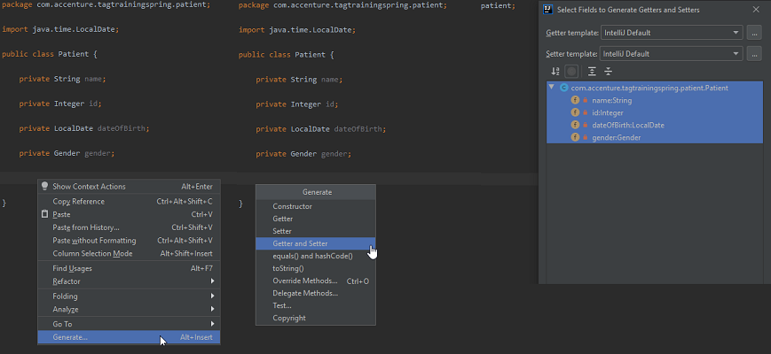
That’s it for Day 1!
Yesterday we focused on creating classes with some fields to hold our data. Today we will be exploring more of the features that Java provides to do some more intricate logic stuff with our classes.
Some of these Java things we’ll cover include:
Again, watch the below videos before you attempt each of the tasks:
@Autowired, @Service and @GetMapping.We’re going to be applying some of what we’ve learnt in the first few of the above videos to our project now. We use conditional logic to enhance some of the code we’ve already written. This can be used to prevent errors by checking if certain conditions are true. We can also leverage the power of collections. This allows us to process multiple objects, such as a list of Screening, at once.
Finally, we’re going to add Spring to our project! This will allow us to make requests to our app from our browser/Postman using a URL and to get resources (like Screenings) back in response. This is known as a REST API. Again, there’s a lot going on under the hood with Spring but we’ll just be wiring up the basics. Spring is designed to be very easy to work with and provides a number of annotations. These are single lines of code starting with the @ symbol which do a lot of work for us.
Let’s start…
ScreeningService in the service package.
Screening & Patient as parameters. The method should return true or false depending on if the screening is for the specified patient.ScreeningSerivce.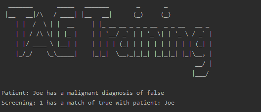
Patient objectsScreening objects for each patient.List of screenings and add each screening to that list.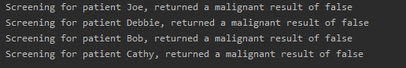
Now we’re going to clean up our code by moving what we’ve written so far into separate classes.
ScreeningDatabase.ScreeningService class with a field (and its constructor) of type ScreeningDatabase.ScreeningService a new method to return the list of screenings from the ScreeningDatabase object it has.ScreeningDatabase object and pass it into the ScreeningService.Screening list from the ScreeningService.Extra points
If you’ve finished the above, congrats! Here’s one last challenge:
ScreeningService class that takes a name, loops over all the screenings and returns the matching Screening. If no match is found, return null.Screening back for a name.Screening you get back is not null, print the name and the screening result. Else, print a message stating that no screening was found.Finally, we’re going to leverage Spring to Autowire our Service and Database classes! This mean that we no longer use the new keyword to create our utility classes, such as the database. Instead, Spring makes them available to us to use on-demand. These are called beans (for some reason).
However, we have to first do a little bit of prep work to our code. This will allow us to fully leverage Spring and to start making requests from our browser. Our first task is to create a controller. This will take requests from our web browser and gives us back a result. In our case we want to get a screening result for a patient.
Let’s begin…
ScreeningController class. Annotate it with @RestController.ScreeningDatabase class to be a bean by adding the @Component annotation.ScreeningDatabase into the ScreeningService class.ScreeningService to itself be a service bean using the @Service annotation. You can also remove it’s constructor.ScreeningService into the new ScreeningController.ScreeningController called getScreenings which returns a list of Screening. This is our first API method which returns all the screenings we have.ScreeningService get screenings method and return the list of Screening.@GetMapping("/screenings") annotation to our new method. This is our URL to access the endpoint.http://localhost:8080/screenings from Postman or Chrome and all the screenings should be returned in JSON.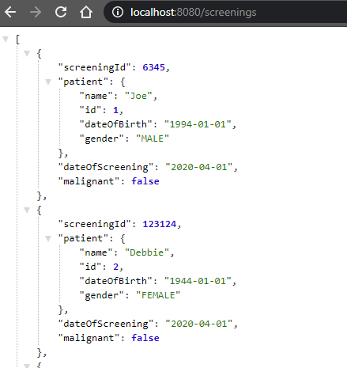
Hints
SpringApplication.run(TagTrainingSpringApplication.class, args);For the final day of Java training, well be adding some additional features to our API to retrieve and create screenings. To do this, we’ll be leveraging the power of Spring. Spring has many powerful tools for manipulating data, particularly for creating APIs. The annotations it provides (some of which you used yesterday) will allow us to easily read and insert data. We’ll also be implementing a simple Design Pattern to access our data, as well as implementing an interface and doing some basic interactions with a database using SQL.
In the background of our Spring app is a pre-populated, in-memory database of screenings. This is what we’re going to be interacting with today to get and store data through our API. The database contains about 500 screenings with each one being uniquely identified by an id. This id belongs to a single patient. Our Spring app interacts with the database using the power of SQL. We’ll only have to write a few lines to get things up and running.
If you want to play around with the in-memory database, you can! To do so:
jdbc:h2:mem:malignantScreeningDB in and then connect.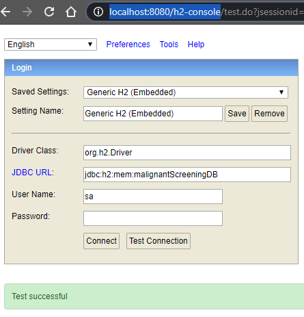
SCREENING_RESULTS column on the left and start typing some SQL into the form! The example below lists all the screenings in the database. Don’t worry about breaking anything. Whenever you restart the Spring app, the DB is reloaded from scratch.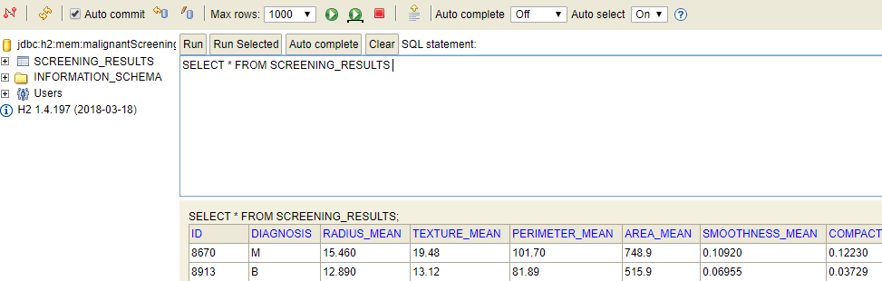
Below are several videos to watch related to Spring, Maven, HTTP, API’s and databases, all of which we’re going to cover in the tasks for today:
Our first task will be to update our existing Screening class with the 30 odd fields that exist for a malignant screening in our data set. Up until now, we’ve just had 4. As you can see from the file, which represents malignant screenings for a number of patient’s, there are quite a lot of fields we will need in our class! If we were to write (or generate) a getter/setter for each field, the class would run to 100’s of lines.
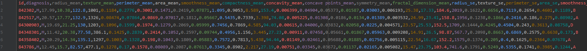
To get around this, we can use a code generation tool called Lombok. Lombok will create getters/setters on the class at runtime, saving us from having to explicitly write them. Now instead of having a bloated class file, we simply have Lombok do all the work using 2 simple annotations at the top of the class!
Let’s do this now:

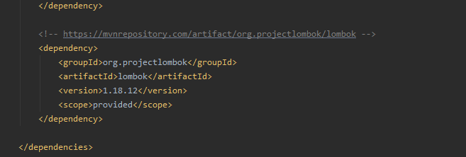
Screening class, delete every field and constructor.Screening class.@Getter and @Setter annotation to the Screening class.Patient classes, except use the @Data annotation. Delete the existing explicit getters/setters/constructors as they are not needed anymore.Now we just need to clean up our code to factor in our changes to the Screening class!
Patient object. Add a Lombok AllArgsConstructor annotation in addition to the @Data annotation to replace it.ScreeningService isPatientScreening method to compare the Screening id to the Patient id using equality. Notice that we are comparing a primitive to a class!getScreenings method to return Null for now.Our objects should now be wired with Lombok! The amount of what is called BoilerPlate code has been significantly reduced and our classes look much cleaner. Next, we need to populate our Screening fields with data from the in-memory database!
We’ll do this now in Task 2…
Hints
Now we’re ready to implement the population of screenings from our local database. Running in the background of our Spring app is an in memory database with 100’s of screenings. What we’re going to do now is implement a few changes so that we can get this data!
First we need to create our contract for accessing the Screening data from our local database.
ScreeningDao in the screening package.Screening for a patient id.Screenings.ScreeningDaoImpl that implements the ScreeningDao (can use Intellij again to generate methods). Wire it up as a Spring bean.ScreeningSerivce getScreenings method. We’re now just going to use our DAO above to get data.ScreeningSerivce with ScreeningDaoImpl update any references.Now we’re going to write some SQL to get screenings from the local database.
JdbcTemplate Bean into our ScreeningDaoImpl. This bean is provided by Spring to easily execute our SQL.ScreeningRowMapper. This was disabled up until now as the Screening class didn’t have the correct fields we needed to map.Screenings.Screening.ScreeningController with a new endpoint to accept a single patient id and return the Screening from the DAO using the above method. You can use the @PathVariable annotation in the method signature.To Test the Endpoints: Try a patient id (from the data set) that does exist and one that does not. You should get an error for the one that does not exist. This is an exception and we will be updating our code to better handle this later. Also, try the endpoint to get all Screenings. It should return every Screening from the database as one big blob of JSON.
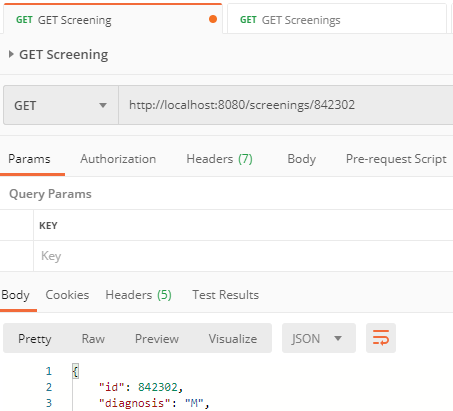
Hints
implements ScreeningDao line to the ScreeningDatabase and click Implement Methods.ScreeningRowMapper maps the SQL screening result to our Java Screening objects.In the previous task we selected, or Read, screenings. Now we are going to Create them.
ScreeningController that’s purpose is to update a screening.@PostMapping("screenings").@RequestBody of Screening. This means that we expect a JSON version of a screening to be sent in the request to our app.ScreeningDao with a new save method. It should take a Screening as a parameter.ScreeningDaoImpl. Using the jdbcTemplate.update(), write SQL to insert a new row into screening_results with the values id, diagnosis, symmetry_mean and group_id.Now we’re ready to send some JSON to our new endpoint!
Screening from the single screening endpoint and paste it into the Body -> raw JSON tab of the request in PostMan.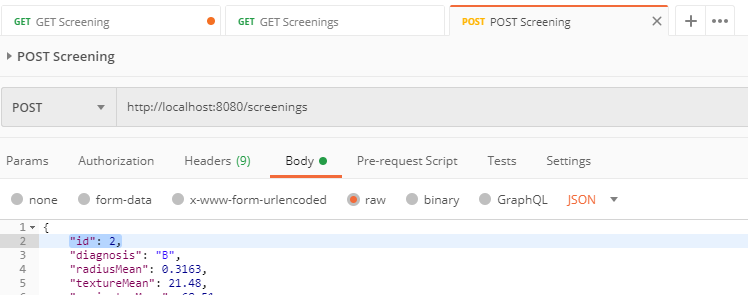
That’s it, you’ve now created an API using Spring!
For our final task, we’re going to implement a small bit of exception handling. This is to catch errors the our Java program throws when we don’t get any results back after running our SQL.
ScreeningDaoImpl get for patient id method, implement an empty try/catch block.jdmbcTemplate.queryForObject() code in the try block.EmptyResultDataAccessException.For extra points, you can implement logging! Logs are what we analyze on live systems to see where errors occurred.
ScreeningDaoImpl class, add the annotation @Slf4j. This is our logging library.log.info("..."") for example.Done! We have now implemented C and R from CRUD in our Screening API.